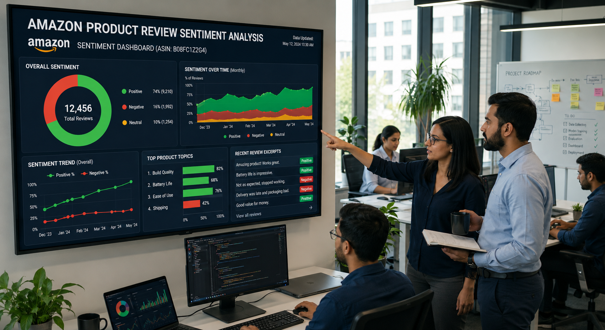

Selected Projects
Work
01
Data Analytics Project / 2026
Amazon Product Reviews Sentiment Analysis
TEXT ANALYTICS CUSTOMER INSIGHTS
87%
Sentiment Classification Accuracy
12K+
Customer Reviews Processed

Analyzed Amazon product reviews using NLP techniques to classify customer sentiment, uncover
product strengths and weaknesses, and generate actionable business insights.
Python
Pandas
NLTK
Scikit-learn
Power BI
03
SuperStore Sales Analysis / 2026
SuperStore Sales Analysis
SALES ANALYTICS POWER BI
22K+
Units Sold
3.93
Avg Delivery Days
Built an interactive Power BI dashboard to analyze Super Store sales performance across regions,
categories, customer segments, and shipping modes. Identified sales trends, profit drivers, and
operational insights through dynamic visualizations and KPI tracking.
Power BI
Excel
DAX
Data Modeling
Data Visualization
Business Intelligence